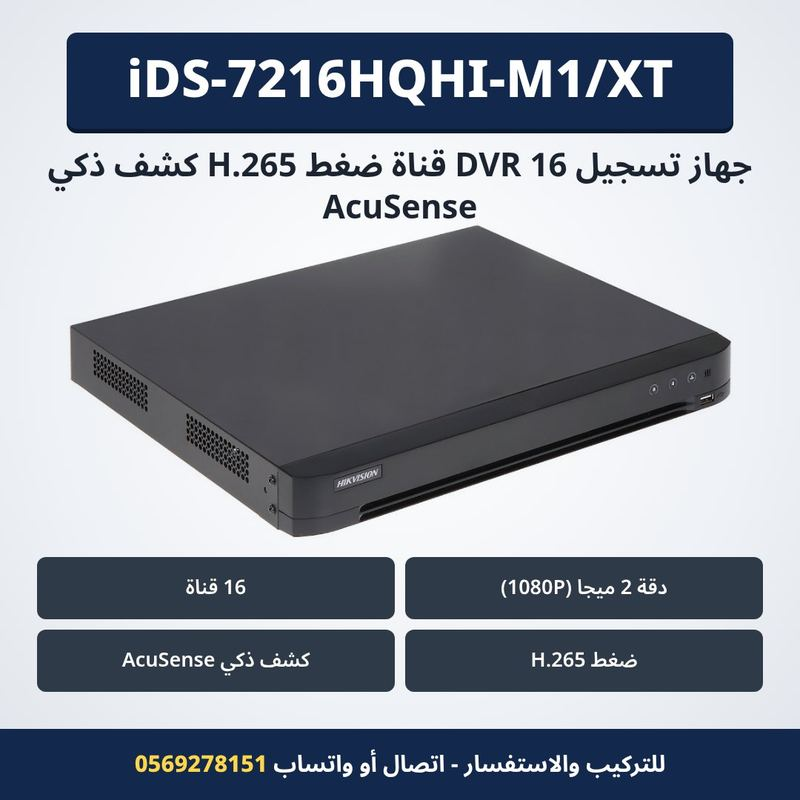

كل المنتجات ← كاميرات وأجهزة هيكفيجن
الموديل: iDS-7216HQHI-M1/XT

| الماركة | هيكفيجن |
|---|---|
| الموديل | iDS-7216HQHI-M1/XT |
| نوع المنتج | جهاز تسجيل DVR |
| الحماية المحيطية | |
| تحليل الأشخاص والمركبات | Up to 8-ch (advanced model) |
| Facial Detection | |
| Facial Detection and Capture | Face picture detection, face picture search； 4-ch face picture capture |
| التعرف على الأهداف | |
| Face Picture Comparison | Face picture comparison, face picture search (4-ch face picture comparison alarm for HD analog camera) |
| Face Picture Library | Up to 16 face picture libraries,; HDD damage will not cause data loss in the face picture library, because the library has been backed up by HDD and flash. |
| كشف الحركة 2.0 | |
| تحليل الأشخاص والمركبات | Deep learning-based motion detection 2.0 is enabled by default for all analog channels, it can classify human and vehicle, and extremely reduce false alarms caused by objects like leaves and lights; Quick search by object or event type is supported; |
| الفيديو والصوت | |
| مدخلات فيديو IP | 8-ch (up to 24-ch), Up to 6 MP resolution |
| Analog Video Input | 16-ch BNC interface (1.0 Vp-p, 75 Ω), supporting coaxitron connection |
| HDTVI Input | 3K(2960 x 1665)@25/20 fps, 3K(3328x1504)@20fps,2K(2304x1296)@20fps,5 MP(2560 × 1944)@20 fps, 4 MP(2560 × 1440)@25/30 fps,1080P@25/30 fps, 720P@25/30fps |
| AHD Input | 5 MP(2560 × 1944)@20 fps, 4 MP(2560 × 1440)@25/30 fps,1080P@25/30 fps, 720P@25/30fps |
| HDCVI Input | 3K(2880×1620)@20/25 fps, 5MP(2592 × 1944)@20 fps, 4MP(2560 × 1440)@25/30 fps,1080P@25/30 fps, 720P@25/30 fps |
| CVBS Input | PAL/NTSC |
| مخرج CVBS | 1-ch, BNC (1.0 Vp-p, 75 Ω), resolution: PAL: 704 × 576, NTSC: 704 × 480 |
| مخرج HDMI | 1-ch, 4K (3840 × 2160)/30Hz, 2K (2560 × 1440)/60Hz, 1920 × 1080/60Hz, 1280 × 1024/60Hz, 1280 × 720/60Hz, HDMI/VGA simultaneous output |
| مخرج VGA | 1-ch, 1920 × 1080/60Hz, 1280 × 1024/60Hz, 1280 × 720/60Hz, HDMI/VGA simultaneous output |
| Audio Input | 1-ch (up to 16-ch is optional), RCA (2.0 Vp-p, 1 KΩ), 16-ch via coaxial cable |
| مخرج الصوت | 1-ch, RCA (Linear, 1 KΩ) |
| صوت ثنائي الاتجاه | 1-ch, RCA (2.0 Vp-p, 1 KΩ) (using the first audio input) |
| Synchronous playback | 16-ch |
| التسجيل | |
| Video Compression | H.265 Pro+/H.265 Pro/H.265/H.264+/H.264 |
| Encoding Resolution | When 1080p Lite mode is not enabled: 2K/3K lite/5 MP lite/4 MP lite/1080p/720p/VGA/WD1/4CIF/CIF; When 1080p Lite mode is enabled: 2K/3K lite/5 MP lite/4 MP lite/1080p lite/720p lite/VGA/WD1/4CIF/CIF |
| معدل الإطارات | Main stream: When 1080p Lite mode not enabled: For 3K stream access: 3K lite@12fps;4 MP lite@15fps/1080pLite@20fps;720p/WD1/4CIF/VGA/CIF@20fps For 5 MP stream access: 5 MP lite@12fps;4 MP lite@15fps/1080pLite@20fps;720p/WD1/4CIF/VGA/CIF@20fps For 4 MP stream access: 4 MP lite@15fps/1080pLite@25fps (P)/30fps (N) ;720p/WD1/4CIF/VGA/CIF@25fps (P)/30fps (N) For 1080p stream access: 1080p/720p@15fps; VGA/WD1/4CIF/CIF@25fps (P)/30fps (N) For 720p stream access: 720p/VGA/WD1/4CIF/CIF@25fps (P)/30fps (N) When 1080p Lite mode enabled: 3K lite/5 MP lite@12fps;4 MP lite@15fps;1080p lite/720p lite/VGA/WD1/4CIF/CIF@25fps (P)/30fps (N) Sub-stream: WD1/4CIF@12fps; CIF@25fps (P)/30fps (N) |
| Video Bitrate | 32 Kbps to 6 Mbps |
| Dual-stream | Support main stream or sub stream |
| Stream Type | Video, Video & Audio |
| Audio Compression | G.711u |
| Audio Bitrate | 64 Kbps |
| فك الترميز | |
| Decoding Capability | up to 24-ch 1080P@30fps |
| الشبكة | |
| Remote Connection | 128 |
| Total Bandwidth | 256 Mbps |
| Network Protocol | TCP/IP, PPPoE, DHCP, Hik-Connect, DNS, DDNS, NTP, SADP, NFS, iSCSI, UPnP™, HTTPS, ONVIF, ISUP |
| Network Interface | 1, RJ45 10/100/1000 Mbps self-adaptive Ethernet interface |
| الواجهات المساعدة | |
| SATA | 1 SATA interface, up to 12 TB capacity for each disk |
| Serial Interface | RS-485 (half-duplex) |
| USB Interface | Front panel: 1 × USB 2.0; Rear panel: 2 × USB 3.0 |
| Alarm In/Out | N/A (optional to support) |
| عام | |
| مصدر الطاقة | 12 VDC, 2 A |
| Consumption | ≤ 24 W |
| حرارة العمل | -10 °C to 55 °C (14 °F to 131 °F) |
| Working Humidity | 10% to 90% |
| Dimension (W × D × H) | 319 × 240 × 48 mm (12.6 × 9.4 × 1.9 inch) |